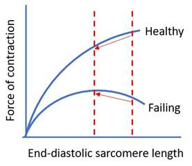

· Summary
· Direct effects
· Indirect effects
|
Determinants of cardiac output |
· ↑Preload · ↓Afterload · ↑Rate · ↑Contractility |
|
Overall effect |
Right ventricle: · ↓Preload (from compression of inflow) · ↑Afterload (since arteries are intrathoracic) -> ↓Output and ↑MVO2 Left ventricle: · ↓Preload (mainly from ↓RV output) · ↓Afterload (since arteries are extrathoracic) -> ↓Output but
↓MVO2 |
|
Respiratory oscillation |
Inspiration: · ↑Intrathoracic pressure (opposite to spont vent) o ↑LV output o ↓RV output Expiration: · ↓Intrathoracic pressure (normalisation if no PEEP) o ↓LV output o ↑RV output |
|
Cardiac status |
Healthy LV = ↓output · ↓Preload is bad; worse if o PEEP (venous obstruction) o Head up (venous pooling) o Hypovolaemia · ↓Afterload is good Failing LV = ↑output · Pathophysiology: o Venous congestion -> ↑preload o Inspiratory effort -> ↑transmural pressure (preload and afterload) · Effects: o ↓Preload is good o ↓Afterload is good
 |
|
Inflow |
Valsalva: 1. Early inspiration: venous emptying -> ↑preload 2. Late inspiration: venous collapse -> ↓preload (major) 3. Early expiration: venous pooling -> ↓preload 4. Late expiration: venous filling -> ↑preload (major) |
|
Outflow |
· Pulmonary: ↑PA and alveolar pressure -> ↑PVR -> ↑RV afterload · Systemic: ↑aortic pressure -> ↑thoracic outflow -> ↓LV afterload |
|
Ventricles |
· ↓Compliance -> ↓preload · ↓Transmural pressure -> ↓afterload |
|
Other |
· Overall ↓RV output -> ↓LV preload · Absent negative pressure -> ↓RV preload (i.e. no diaphragm pump) ·
↑RV afterload -> RV distension -> ↓LV
compliance -> ↓LV preload |
|
Neural |
· Baroreceptor response: ↓CO -> ↓mAP -> ↓stretch -> ↑SNS output |
|
Hormonal |
· RAAS: ↓CO -> ↓mAP -> ↓renal baroreceptor stretch -> ↑RAAS activity o Vasoconstriction -> ↑afterload o Na+/H2O retention -> ↑preload · ANP: ↑CVP -> atrial stretch -> ↑ANP o ↑HR o Natriuresis -> ↓preload |
|
Intrinsic |
· Bainbridge effect: ↓preload -> ↓atrial stretch -> ↓HR · Bowditch effect: ↑HR -> ↑Ca2+ influx-> ↑contractility · Anrep effect: ↓afterload -> ↓Ca2+ extrusion -> ↓contractility |
Feedback welcome at ketaminenightmares@gmail.com